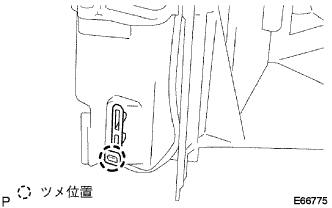
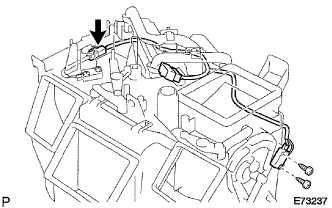
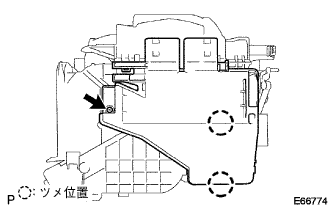
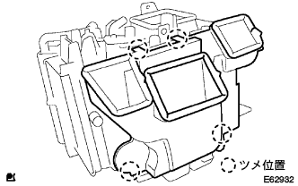
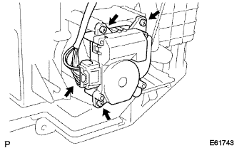
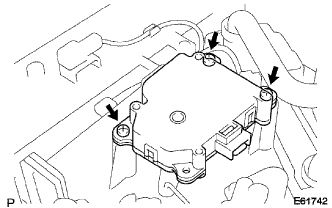

ヒータ ラジエータ 組み付け |
| 1. アスピレータ パイプ取り付け（Ａ／Ｃオート） |
| 2. サーミスタASSY取り付け（寒冷地仕様者+A/Cマニュアル、A/Cオート） |
|  |
ツメをかん合させ、サーミスタASSYを取り付ける。
| 3. クーラ ワイヤリング NO.1取り付け（寒冷地仕様車） |
|  |
スクリュ2本でクーラワイヤリングNo.1を取り付ける。
コネクタを接続する。
| 4. ヒータ カバー取り付け |
|  |
スクリュおよびツメを2箇所かん合させて、ヒータカバーを取り付ける。
| 5. エア ダクト取り付け |
|  |
ツメを４箇所かん合させて、エアダクトを取り付ける。
| 6. モード ダンパ サーボSUB-ASSY取り付け（Ａ／Ｃオート） |
|  |
スクリュー3本でモードダンパサーボを取り付ける。
コネクタを接続する。
| 7. エアミックス ダンパ サーボSUB-ASSY取り付け（Ａ／Ｃオート） |
|  |
スクリュー3本でエアミツクスダンパサーボを取り付ける。
コネクタを接続する。